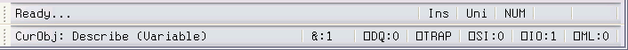
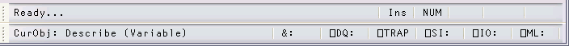

The session status bar is represented by two CoolBands each of which contains a StatusBar object. There are a number of StatusFields as illustrated below. Your own status bar may be configured differently.

Classic Edition

Unicode Edition
The StatusField objects owned by the session StatusBar may have special values of Style, which are used for operations relevant only to the Session. These styles are summarised in the tables shown below.
Table 45: Session status fields : first row
| StatusField | Style | Description |
|---|---|---|
| hint | None | Displays hints for the session objects, or "Ready..." when APL is waiting for input |
| insrep | InsRep | Displays the mode of the Insert key (Ins or Rep) |
| mode | KeyMode | Displays the keyboard mode. This is applicable only to a multi-mode keyboard. The text displayed is defined by the Mn= string in the Input Table. Classic Edition Only. |
| num | NumLock | Indicates the state of the Num Lock key. Displays "NUM" if Num Lock is on, blank if off. |
| caps | CapsLock | Indicates the state of the Caps Lock key. Displays "Caps" if Caps Lock is on, blank if off. |
| pause | Pause | Displays a flashing red "Pause" message when the Pause key is used to halt session output |
Table 46: Session status fields : second row
| StatusField | Style | Description |
|---|---|---|
| curobj | CurObj | Displays the name of the current object (the name last under the input cursor) |
| tc | ThreadCount | Displays the number of threads currently running (minimum is 1) |
| dqlen | DQLen | Displays the number of events in the APL event queue |
| trap | Trap | Turns red if ⎕TRAP is set |
| si | SI | Displays the length of ⎕SI. Turns red if non-zero |
| io | IO | Displays the value of ⎕IO. Turns red if ⎕IO is not equal to the value of the default_io parameter |
| ml | ML | Displays the value of ⎕ML. Turns red if ⎕ML is not equal to the value of the default_ml parameter |
In the default Session files distributed with this release, the Statusfields used to display the value of ⎕IO, the state of the Insert key (Ins/Rep) and the current keyboard mode (e.g. Apl/Uni) have callback functions attached to MouseDblClick. This means that you can toggle the state of these fields by double-clicking with the left mouse button.
If you dislike this behaviour, you may set the Event property of the Statusfields to 0 and re-save the Session file. Alternatively, you may modify BUILDSE.DWS and rebuild the Session from scratch.